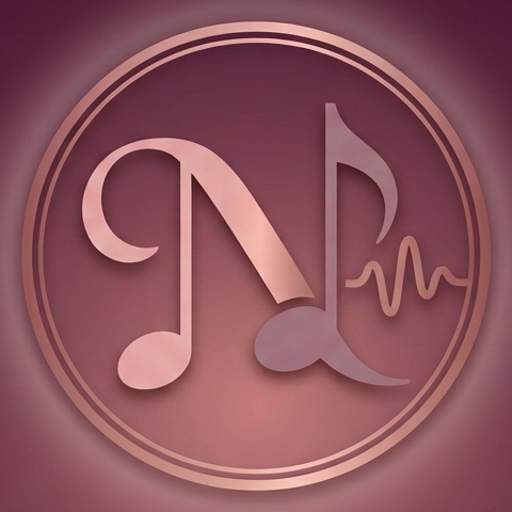

Neska Music
GLOBAL SOUND, now as an app.
Download for AndroidAndroid: open the file, allow "Install unknown apps" if asked, then tap Install.Download for iPhone (sideload)iPhone: install it from a computer with Sideloadly or AltStore using your Apple ID. It needs re-signing every 7 days.